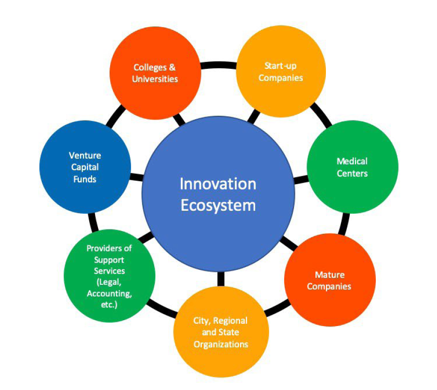
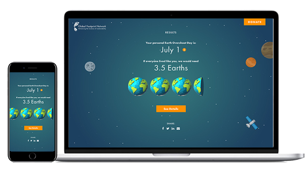
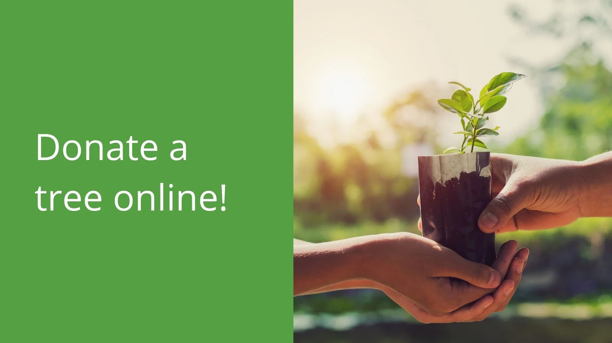

მწვანე პროექტები
გაეცანით ახალ ინიციატივებს...
ჩვენი მიზანია ბუნების დაცვის პრიორიტეტად დაყენება და მდგრადი განვითარების ხელშეწყობა. 2024 წელს ვგეგმავთ მრავალფეროვანი პროექტების განხორციელებას, რომლებიც მიმართულია ეკოსისტემების შენარჩუნებაზე და ადამიანების ეკოლოგიური ცნობიერების ამაღლებაზე:
ინოვაციები
ეკო-კალკულატორი: ჩვენ შევქმნით მარტივ ინსტრუმენტს, რომელიც მომხმარებლებს დაეხმარება გაანგარიშონ საკუთარი ნახშირბადის კვალი. გარდა ამისა, მიღებული შედეგების საფუძველზე ისინი მიიღებენ რჩევებს, როგორ შეამცირონ გარემოზე უარყოფითი ზეგავლენა.
მწვანე რჩევების ბლოგი: შექმნილი იქნება ბლოგი, რომელიც ყოველდღიურად გაუზიარებს მომხმარებლებს პრაქტიკულ რჩევებს ბუნების დაცვის შესახებ. ეს მოიცავს ისეთ თემებს, როგორიცაა ენერგიის დაზოგვა, ნარჩენების სწორად მართვა და რესურსების რაციონალური გამოყენება. 
ვირტუალური ხეების დარგვა
ამ ინიციატივის ფარგლებში, დონაციის საფუძველზე დარგული თითოეული ხე გამოჩნდება ვირტუალურ რუკაზე. ეს შესაძლებლობას მისცემს მომხმარებლებს, თვალყური ადევნონ თავიანთ წვლილს გარემოს გამწვანებაში.
